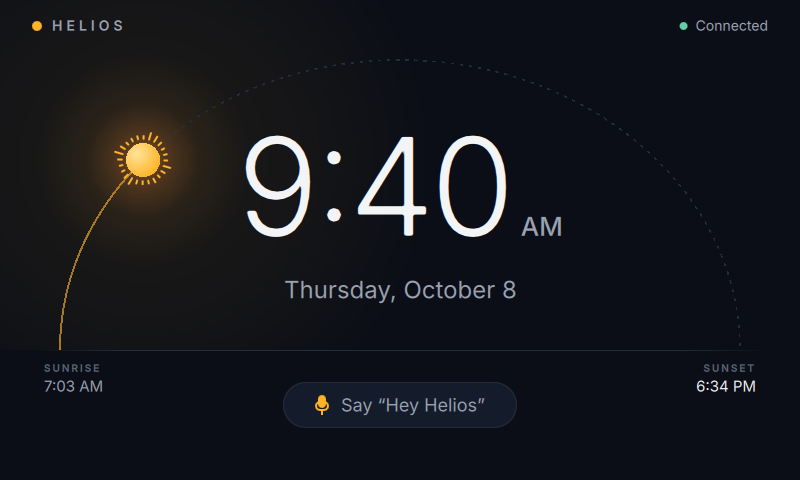
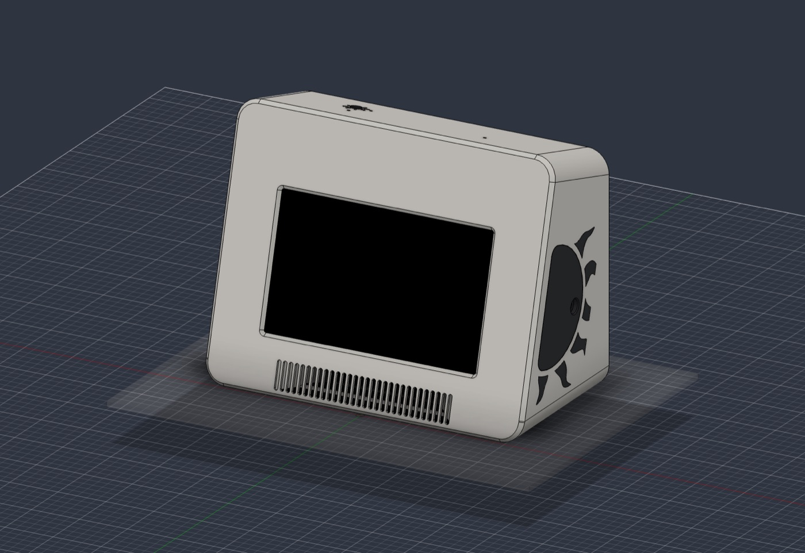
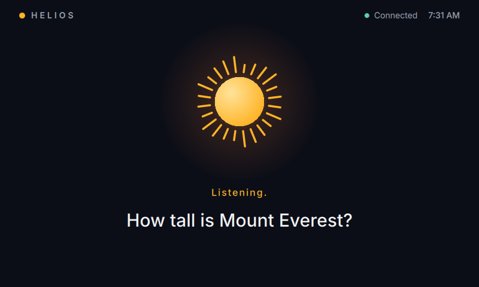
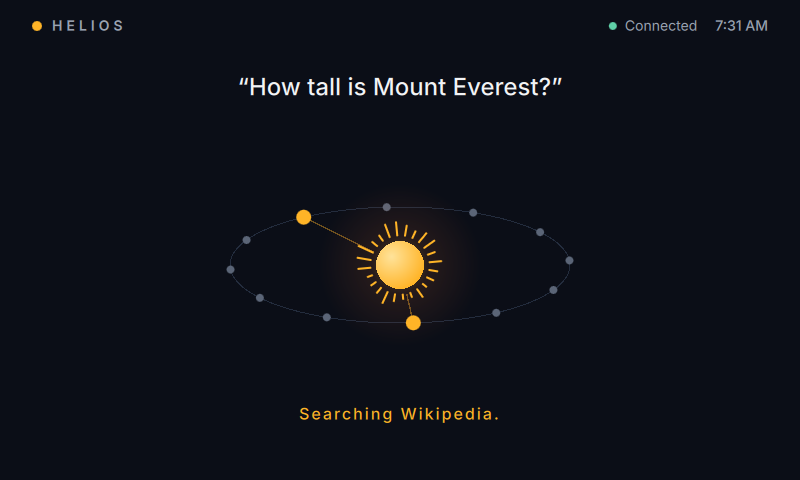
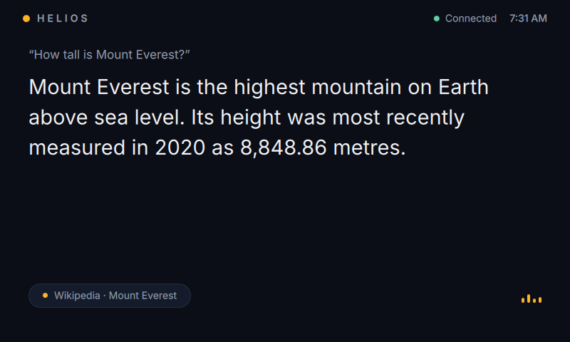

I built an AI from scratch, and the device you talk to it with.
Helios is an 8.28-billion-parameter language model I designed and trained myself on one computer, plus a small voice device that listens, looks up live facts, and answers out loud.

Asher Greer
Student at Dawson School. I build hardware and software, and I like knowing how a thing works all the way down.
Most AI projects start from a model a big company already trained, and adjust it. I wanted to know what it takes to build one with nothing borrowed: my own design, my own vocabulary, my own training run, on hardware I can put on a desk.
Helios is my second model. The first, Icarus, was a 51-million-parameter model I built to learn the basics. Helios is about 160 times bigger. I spent the summer of 2026 designing it and started its training run on August 18, before the capstone even began, so the school semester could go to teaching it to talk and building the device around it.
Along the way I learned CAD in Fusion, 3D printing, basic acoustics, Linux on a Raspberry Pi, and how to plan a project that can fail in a dozen places and still make it to the stage.
Helios: ask a question out loud, get a real answer back.
Two halves. A brain I trained myself, running on a desk-sized supercomputer, and a small device on the table that does the listening and talking.
You ask
"Hey Helios" wakes the device. Its microphone board hears the question and the Pi turns speech into text with Moonshine.
It looks things up
For weather, news or facts, it searches live sources first, so the answer comes from real text, not memory.
Helios answers
My model, on the DGX Spark, reads what was found and answers in one to three spoken sentences.
The device speaks
Piper turns the answer into a voice, and the screen shows it.
The 3D tour
Scroll through the real CAD model: the case comes apart, the question travels to the Spark, a word rises through the model's 24 layers, and the real training curve draws itself.
Open the tour →



How it got built
Project proposal
The original plan from August: what Helios would be, why this size, and what changed since.
Read → 02Gantt chart
Seven two-week sprints from Aug 31 to Dec 11, and how far each task got.
See the schedule → 03Unrulr journeys
My published sprint journeys, moment by moment, with the screenshots I posted.
Read → 04Reflections
What worked, what didn't, where the time went, and what I changed each sprint.
Read → 05Research
The model design, live search, benchmarks against other models, and the acoustics and tipping tests behind the case.
Read → 063D tour
The whole project in one scrolling scene.
Open →